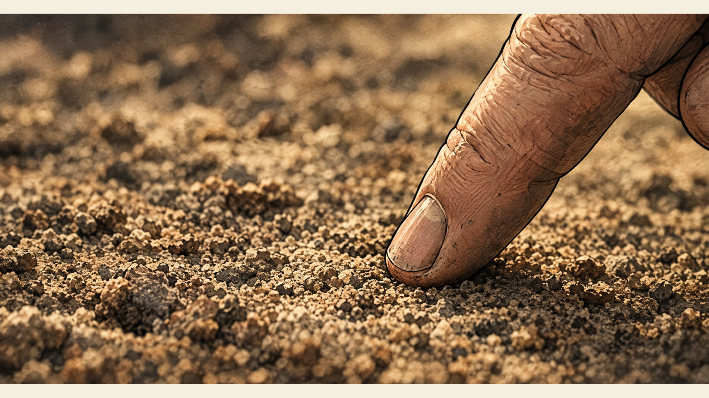
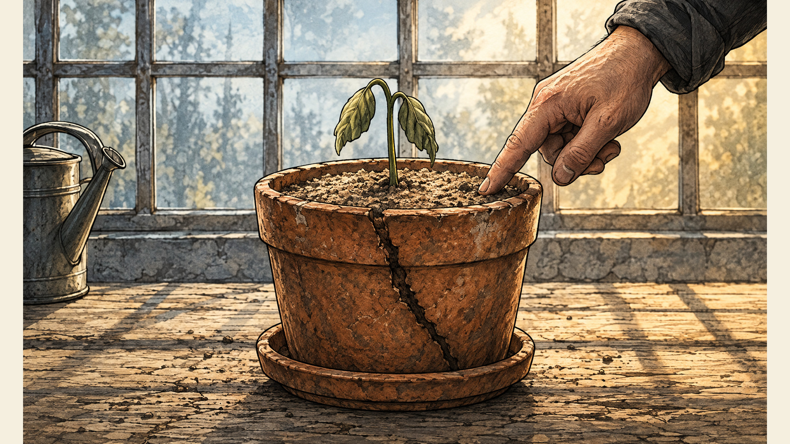

Storyboards & animatics
Make time
visible
The Care Between
A fictional, AI-generated teaching example
10:00 to 10:15 / Stand-up
What moved?
U S C
What is blocked?
What will be true next session?
10:15 to 10:22 / First look
A mood.
An action.
A change.
What can you actually see?

Generated example / The Care Between
A storyboard, in time
01 / Dry soil4 second holdSilent / generated images
10:22 to 10:29 / AI workflow
Which decisions
are yours?
Assisted toolsDenoise. Upscale.
Artist-directed generationA person shapes the work.
Prompt-only outputThe model determines expression.
Copyright depends on human expressive contribution.
A workflow category alone does not decide it.
10:29 / One beat, two framings
What does each frame let you know?

A / Information withheld
B / Context revealedA isolates touch and texture. B adds context.
The intended reading determines the useful frame.
A panel is a production decision

03 / Water
- Action
- Water reaches soil.
- Camera
- Medium close. Locked.
- Time
- 4 seconds.
- Intent
- See care become action.
Light: warm daylight / No camera move / Generated example
The evidence of elapsed time
Same pot. A visible change.
01 / Before 08 / After
08 / After Stable setting. Changing light. Repeated care. Growth.
The timing plan
30 seconds of change
10:46 to 10:53 / First thumbnails
Your critical moment
8 to 12 panels.
One idea about time passing.
Rough is useful when the decision is clear.
10:53 to 11:03 / Full break
Ten minutes.
A real pause.
10:00
11:03 to 12:03 / Team studio
One scene.
One test.
Finish the boards.
Try the timing.
Show the actual work.
11:03 U
11:18 S
11:33 C
11:48 Common fixes
Suggested rotation. Confirm the order in the room.
12:03 to 12:35 / Peer review
Can we read the scene?
ActionWhat changes?
CameraWhat can you see?
TimeWhat proves it passed?
IntentWhat does it mean?
12:35 to 12:50 / Close
The next visible step
Oct 12Next class
Oct 14Present the 30-second prototype
Oct 15 / 5 PM PacificPrototype file due
Oct 8 to 9: fall recess.
No work due or expected.
Final: 2 to 3 minute visual narrative. Minimal dialogue. Environmental text only.